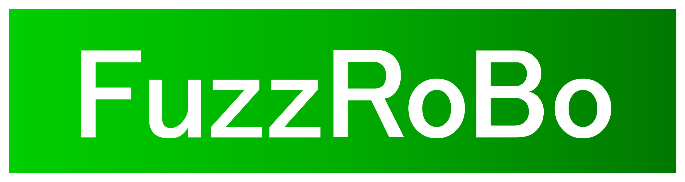

マーカーをドラッグして手先を操作
オリジナルCADメッシュを読み込み中
左／右アームを選び、手先に表示された矢印・平面をドラッグします。中央の小さな球は画面に平行な平面内を自由に移動できます。
姿勢維持をオフにすると、位置を優先して腕が追従します。目標が届かない場合は黄色表示と位置誤差が残ります。可動範囲内でも、姿勢や初期姿勢によってIKが収束しない場合があります。
回転表示はURDF基準のRoll・Pitch・Yaw（度）。TCP位置はbase_footprint基準（mm）です。
URDFの関節制限と指のmimicを使用。continuous関節のスライダーは操作用に±180°を表示します。衝突回避・動力学・実機制御は行いません。